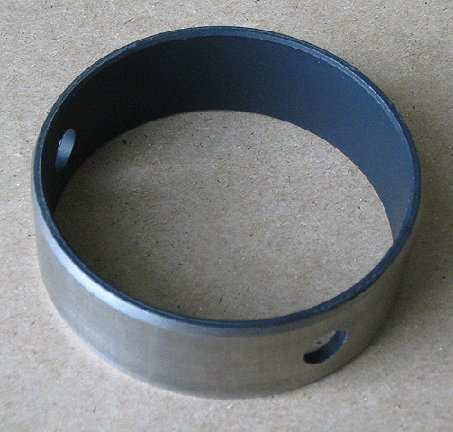
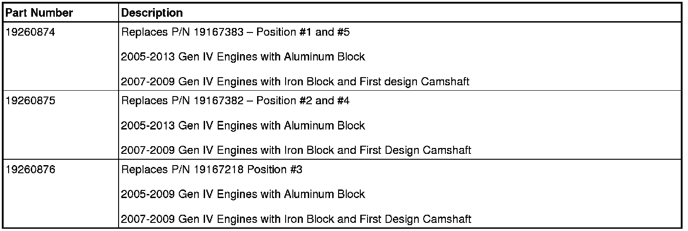
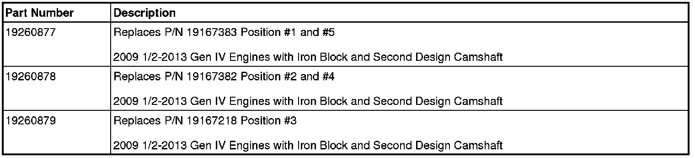
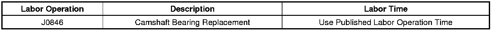

Engine - New Service Cam Bearings
INFORMATIONBulletin No.: 12-06-01-007A
Date: February 19, 2013
Subject: New Service Cam Bearings For Gen IV V8 Engines
Models:
2005-2007 Buick Rainier
2007-2013 Cadillac CTS-V
2007-2013 Cadillac Escalade, Escalade ESV, Escalade EXT
2006-2007 Chevrolet Monte Carlo SS
2006-2009 Chevrolet Impala SS
2007-2009 Chevrolet TrailBlazer SS
2007-2013 Chevrolet Avalanche, Silverado 1500, Suburban, Tahoe
2007-2013 Chevrolet Express
2008-2013 Chevrolet Corvette, Corvette Grand Sport, Corvette ZR1, Z06
2009-2012 Chevrolet Colorado
2010-2013 Chevrolet Camaro
2007-2009 GMC Envoy
2007-2013 GMC Sierra 1500, Sierra Denali, Yukon, Yukon XL, Yukon Denali, Yukon Denali XL
2007-2013 GMC Savana
2009-2012 GMC Canyon
2006-2008 Pontiac Grand Prix, GXP
2008-2009 Pontiac G8 GT
Equipped with Gen IV V8 Engine Except Hybrid (LFA, LZ1)
Supercede:
This bulletin is being revised to clarify the title of the first part information table. Please discard Corporate Bulletin Number 12-06-01-007 (Section 06 - Engine/Propulsion System).

New service cam bearings for Gen IV V8 engines have been released.
When replacing cam bearings, replace all five cam bearings with the newly released service parts. The new cam bearings have a polymer coating and will appear different. The bearing surface looks black due to the coating.
Note
If the black coating wears off, it does not mean that the bearing is bad. There is still a lead lining material underneath. If the lining is damaged or worn beyond specifications, then replacement would be required.
The maximum cam journal to bearing oil clearance of 0.005 inch (0.127 mm) with the service bearings installed on engines with AFM or CMP.
The maximum cam journal to bearing oil clearance of 0.006 inch (0.152 mm) with the service bearings installed on engines without AFM or CMP.
All Aluminum Blocks and Iron Blocks with First Design Camshafts

Second Design Camshaft with Iron Block Only Late 2009 to Present

Warranty Information

For vehicles repaired under warranty, use the table.

Disclaimer